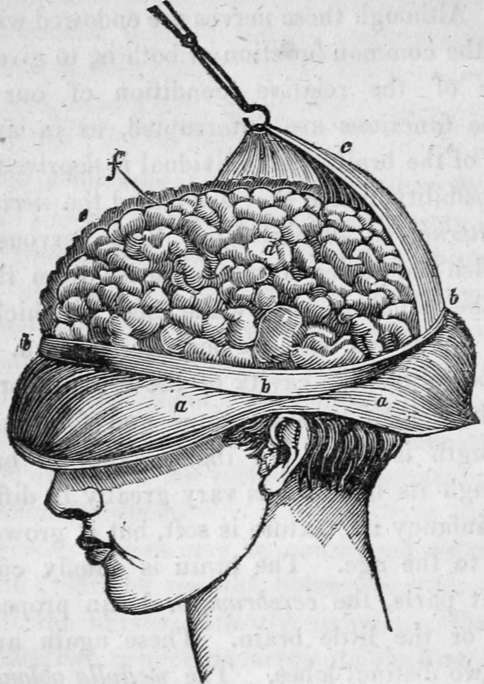

Chapter IX. The Nervous System. The Brain, Spinal Marrow, And Nerves
Description
This section is from the book "Human Physiology For The Use Of Elementary Schools", by Charles Alfred Lee. Also available from Amazon: Human Physiology, for the Use of Elementary Schools.
Chapter IX. The Nervous System. The Brain, Spinal Marrow, And Nerves
1. There is no subject, which falls within the range of physiological enquiry, more interesting or more important, than that of the nervous system. It is this which furnishes the material instrument of thought, the means by which we become acquainted with the external world around us, and also the channels by which the will sends forth its commands to the instruments it employs in their execution. Besides this, it presides over and regulates the functions of the animal economy, and binds the various organs into one sympathizing, harmonious whole.
2. The nervous system may be considered as embracing, 1st. the brain; 2d. the medulla oblongata ; 3d. the spinal marrow ; 4th. the nerves; 5th. the ganglia. These are all embraced under two general departments, the first consisting of the brain and its dependencies ; and the second, of the ganglia and their nervous connections ; the first appertaining particularly to animal life, conveying impressions calculated to produce sensations, and sending out volitions to its servants, the organs destined to receive them ; while the second supply those organs not under the influence of the will, viz. of digestion, circulation, respiration, and the secretions.
3. These two grand divisions of the nervous system, may be still further distinguished by the circumstance, that the first, or cerebral department, is exactly symmetrical. The nerves all go out in pairs from each side of the brain and spinal cord, while the ganglionic system of nerves is distributed irregularly to all the internal organs. The nerves of the first kind, are either nerves of sensation or of motion. These nerves, as discovered by Sir Charles Bell, are entirely distinct, the one rarely, if ever, performing the function of the other. Although these nerves are endowed with different properties, the common function of both is, to give us correct intelligence of the relative condition of our existence. When these functions are interrupted, as in apoplexy, or concussion of the brain, the individual is deprived of all feeling and sensibility, hence they are called the nervous depart merit of external or animal life. The nervous filaments which furnish the power of motion, arise from the anterior column of the spinal marrow, while those in which sensation resides, are connected with the posterior column.
4. The brain fills the cavity of the cranium or skull, and in an adult weighs between three and four pounds. Its greatest length is about six inches, and its breadth five inches, though its dimensions vary greatly in different persons. In infancy its texture is soft, but it grows harder in proportion to the age. The brain is chiefly composed of two distinct parts, the cerebrum, or brain proper; and the cerebellum, or the little brain. These again are divided, each into two distinct lobes. The medulla oblongata is the commencement of the spinal marrow.
5. The brain is surrounded by three membranes ; the two inner ones thin and delicate ; the outer one thick and firm, and called dura mater. It is a perpendicular fold of the dura mater, and divides the brain into two hemispheres. It adheres loosely to the bones of the skull; the internal periosteum of which it forms.
6. The other two thin membranes are called arachnoid and pia mater. The first is a serous membrane, as the dura mater is a fibrous membrane ; and forms a completely closed sac or bag. This membrane, which derives its name from its resemblance to a spider's web, spreads over the whole surface of the brain, without dipping into any of its furrows or convolutions, and also forms a sheath for all nerves or bloodvessels that pass out of, or into the brain.
a. The scalp, turned down.
b. The cut edge of the bones of the skull.
c. The external strong membrane of the brain, (dura mater) sus pended by a hook.
d. The left hemisphere of the brain, showing its convolutions.
e. The superior edge of the right hemisphere. f. The fissure between the two hemispheres.
7. The pia mater is a loose cellular membrane, composed chiefly of blood vessels, which dips into all the fissures, and wraps round all the convolutions of the brain. The chief use of these membranes seems to be to support the different parts of the brain in their respective places, so that they may not be injured by sudden shocks and jars, or by compression; to moisten the brain ; and furnish a medium of transmitting blood vessels and absorbents.
8. The outside surface of the brain is cut up, or intersected by deep winding fissures, forming numerous irregular eminences called convolutions. These fissures are generally about an inch deep. The brain on the outer surface, is to a considerable depth of a grey or ash colour ; hence it is called the cineritious or ashy portion, and sometimes cortical, from its position, like the bark surrounding a tree. The internal portion is white, and is therefore called the medullary part of the brain.
9. The cortical part of the brain which is found on the exterior surface, is on an average about one sixth of an inch in depth, and dips down every where between the convolutions. Besides its being of a greyish colour, it is of a firmer consistence than the medullary matter. It is full of vessels, and from this circumstance has been supposed to nourish the medullary part.
10. There are four cavities in the substance of the brain, termed ventricles. Of these the two lateral ventricles are the largest. During life a serous exhalation is constantly going on into their interior, and in health this fluid is absorbed or taken up, as fast as it is secreted. In dropsy of the brain, the water sometimes accumulates in these cavities in immense quantities. Not long since, a child, about ten years of age, was exhibited in this city, whose head measured two feet and seven inches in circumference, just above the ears. The head was so heavy he could not raise it from the pillow. This was owing to water in the ventricles. The medullary or white matter of the brain occupies the interior part of that organ. It makes up by far the largest portion, and is fibrous in its structure.
Continue to:
- prev: Chapter VIII. Relation Of Animal Bodies To Heat, Light, And Electricity
- Table of Contents
- next: The Nervous System. The Brain, Spinal Marrow, And Nerves. Part 2
Tags
humans, anatomy, skeleton, bones, physiology, organs, nerves, brain